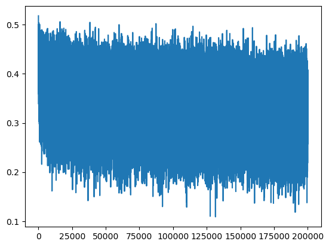
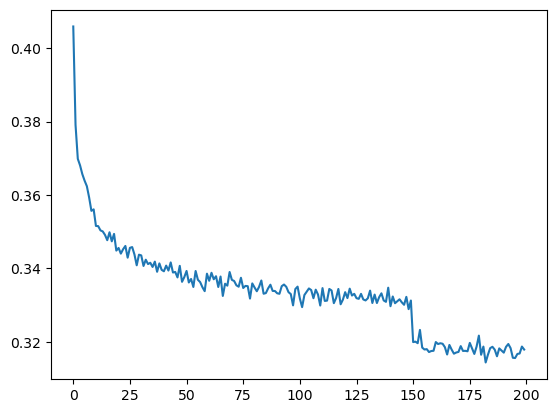
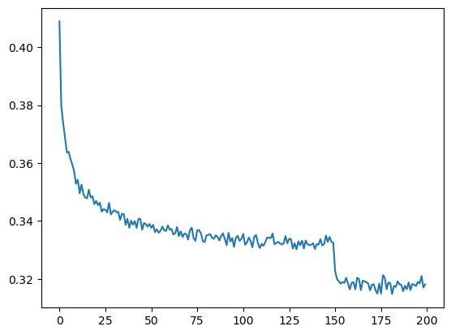
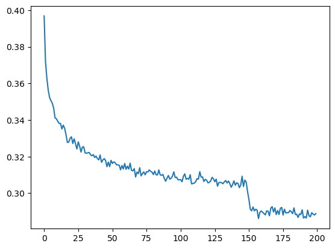
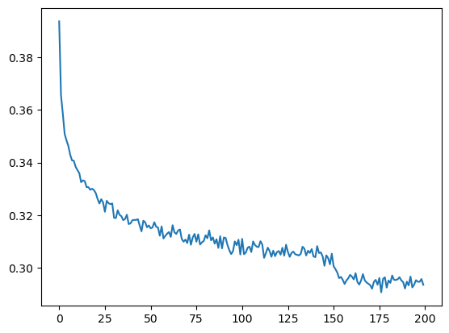
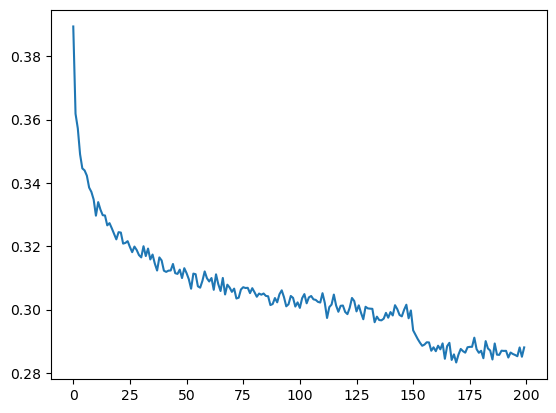

import torch
import torch.nn.functional as F
import matplotlib.pyplot as plt # for making figuresMakemore Part 5
Building a WaveNet
# read in all the words
words = open('../names.txt', 'r').read().splitlines()
print(len(words))
print(max(len(w) for w in words))
print(words[:8])32033
15
['emma', 'olivia', 'ava', 'isabella', 'sophia', 'charlotte', 'mia', 'amelia']# build the vocabulary of characters and mappings to/from integers
chars = sorted(list(set(''.join(words))))
stoi = {s:i+1 for i,s in enumerate(chars)}
stoi['.'] = 0
itos = {i:s for s,i in stoi.items()}
vocab_size = len(itos)
print(itos)
print(vocab_size){1: 'a', 2: 'b', 3: 'c', 4: 'd', 5: 'e', 6: 'f', 7: 'g', 8: 'h', 9: 'i', 10: 'j', 11: 'k', 12: 'l', 13: 'm', 14: 'n', 15: 'o', 16: 'p', 17: 'q', 18: 'r', 19: 's', 20: 't', 21: 'u', 22: 'v', 23: 'w', 24: 'x', 25: 'y', 26: 'z', 0: '.'}
27# shuffle up the words
import random
random.seed(42)
random.shuffle(words)# build the dataset
block_size = 3 # context length: how many characters do we take to predict the next one?
def build_dataset(words):
X, Y = [], []
for w in words:
context = [0] * block_size
for ch in w + '.':
ix = stoi[ch]
X.append(context)
Y.append(ix)
context = context[1:] + [ix] # crop and append
X = torch.tensor(X)
Y = torch.tensor(Y)
print(X.shape, Y.shape)
return X, Y
n1 = int(0.8*len(words))
n2 = int(0.9*len(words))
Xtr, Ytr = build_dataset(words[:n1]) # 80%
Xdev, Ydev = build_dataset(words[n1:n2]) # 10%
Xte, Yte = build_dataset(words[n2:]) # 10%torch.Size([182625, 3]) torch.Size([182625])
torch.Size([22655, 3]) torch.Size([22655])
torch.Size([22866, 3]) torch.Size([22866])for x,y in zip(Xtr[:20], Ytr[:20]):
print(''.join(itos[ix.item()] for ix in x), '-->', itos[y.item()])... --> y
..y --> u
.yu --> h
yuh --> e
uhe --> n
hen --> g
eng --> .
... --> d
..d --> i
.di --> o
dio --> n
ion --> d
ond --> r
ndr --> e
dre --> .
... --> x
..x --> a
.xa --> v
xav --> i
avi --> e# Near copy paste of the layers we have developed in Part 3
# -----------------------------------------------------------------------------------------------
class Linear:
def __init__(self, fan_in, fan_out, bias=True):
self.weight = torch.randn((fan_in, fan_out)) / fan_in**0.5 # note: kaiming init
self.bias = torch.zeros(fan_out) if bias else None
def __call__(self, x):
self.out = x @ self.weight
if self.bias is not None:
self.out += self.bias
return self.out
def parameters(self):
return [self.weight] + ([] if self.bias is None else [self.bias])
# -----------------------------------------------------------------------------------------------
class BatchNorm1d:
def __init__(self, dim, eps=1e-5, momentum=0.1):
self.eps = eps
self.momentum = momentum
self.training = True
# parameters (trained with backprop)
self.gamma = torch.ones(dim)
self.beta = torch.zeros(dim)
# buffers (trained with a running 'momentum update')
self.running_mean = torch.zeros(dim)
self.running_var = torch.ones(dim)
def __call__(self, x):
# calculate the forward pass
if self.training:
xmean = x.mean(0, keepdim=True) # batch mean
xvar = x.var(0, keepdim=True) # batch variance
else:
xmean = self.running_mean
xvar = self.running_var
xhat = (x - xmean) / torch.sqrt(xvar + self.eps) # normalize to unit variance
self.out = self.gamma * xhat + self.beta
# update the buffers
if self.training:
with torch.no_grad():
self.running_mean = (1 - self.momentum) * self.running_mean + self.momentum * xmean
self.running_var = (1 - self.momentum) * self.running_var + self.momentum * xvar
return self.out
def parameters(self):
return [self.gamma, self.beta]
# -----------------------------------------------------------------------------------------------
class Tanh:
def __call__(self, x):
self.out = torch.tanh(x)
return self.out
def parameters(self):
return []torch.manual_seed(42); # seed rng for reproducibilityn_embd = 10 # the dimensionality of the character embedding vectors
n_hidden = 200 # the number of neurons in the hidden layer of the MLP
C = torch.randn((vocab_size, n_embd)) # embedding table
layers = [Linear(n_embd*block_size, n_hidden, bias=False), BatchNorm1d(n_hidden), Tanh(),
Linear(n_hidden, vocab_size)
]
# parameter init
with torch.no_grad():
layers[-1].weight *= 0.1 # last layer make less confident at initialization
parameters = [C] + [p for layer in layers for p in layer.parameters()]
print(sum(p.nelement() for p in parameters)) # number of parameters in total
for p in parameters:
p.requires_grad = True12097# same optimization as last time
max_steps = 200000
batch_size = 32
lossi = []
for i in range(max_steps):
# minibatch construct
ix = torch.randint(0, Xtr.shape[0], (batch_size,))
Xb, Yb = Xtr[ix], Ytr[ix] # batch X,Y
# forward pass
emb = C[Xb] # embed the characters into vectors
x = emb.view(emb.shape[0], -1) # concatenate the vectors
for layer in layers:
x = layer(x)
loss = F.cross_entropy(x, Yb) # loss function
# backward pass
for p in parameters:
p.grad = None
loss.backward()
# update
lr = 0.1 if i < 150000 else 0.01 # step learning rate decay
for p in parameters:
p.data += -lr * p.grad
# track stats
if i % 10000 == 0: # print every once in a while
print(f'{i:7d}/{max_steps:7d}: {loss.item():.4f}')
lossi.append(loss.log10().item())
# break 0/ 200000: 3.2966
10000/ 200000: 2.2322
20000/ 200000: 2.4111
30000/ 200000: 2.1004
40000/ 200000: 2.3157
50000/ 200000: 2.2104
60000/ 200000: 1.9653
70000/ 200000: 1.9767
80000/ 200000: 2.6738
90000/ 200000: 2.0837
100000/ 200000: 2.2730
110000/ 200000: 1.7491
120000/ 200000: 2.2891
130000/ 200000: 2.3443
140000/ 200000: 2.1731
150000/ 200000: 1.8246
160000/ 200000: 1.7614
170000/ 200000: 2.2419
180000/ 200000: 2.0803
190000/ 200000: 2.1326plt.plot(lossi)
lossi[:10][0.5180676579475403,
0.5164594054222107,
0.507362961769104,
0.507546603679657,
0.4992470443248749,
0.5014019012451172,
0.5049523115158081,
0.48866209387779236,
0.4999050199985504,
0.4899313449859619]The above plot was a “dagger in the eyes”. There is a lot of variability in loss from one batch to the next (because of our relatively small batch size of 32 training examples). Let’s do a plot where we visualize the loss like so:
torch.tensor(lossi).view(-1,1000).shapetorch.Size([200, 1000])plt.plot(torch.tensor(lossi).view(-1,1000).mean(1))
# put layers into eval mode (needed for batchnorm especially)
for layer in layers:
layer.training = False@torch.no_grad() # this decorator disables gradient tracking
def split_loss(split):
x,y = {
'train': (Xtr, Ytr),
'val': (Xdev, Ydev),
'test': (Xte, Yte),
}[split]
emb = C[x] # (N, block_size, n_embd)
x = emb.view(emb.shape[0], -1) # concatenate the vectors
for layer in layers:
x = layer(x)
loss = F.cross_entropy(x, y)
print(split, loss.item())
split_loss('train')
split_loss('val')train 2.0583250522613525
val 2.1065289974212646for _ in range(20):
out=[]
context = [0]*block_size
while True:
emb = C[torch.tensor([context])]
x = emb.view(emb.shape[0], -1) # concatenate the vectors
for layer in layers:
x = layer(x)
logits = x
probs = F.softmax(logits, dim=1)
ix = torch.multinomial(probs, num_samples=1).item()
context = context[1:]+[ix]
out.append(ix)
if ix == 0:
break
print(''.join([itos[i] for i in out]))ivon.
fanili.
thoommara.
kelo.
matyn.
leandr.
aleigh.
koldeniah.
prus.
carleen.
jah.
jorra.
alaya.
shonan.
vishylaharia.
juna.
vio.
orven.
mina.
laylee.Introduce Embedding and Flatten
# -----------------------------------------------------------------------------------------------
class Embedding:
def __init__(self, num_embeddings, embedding_dim):
self.weight = torch.randn((num_embeddings, embedding_dim))
def __call__(self, IX):
self.out = self.weight[IX]
return self.out
def parameters(self):
return [self.weight]
# -----------------------------------------------------------------------------------------------
class Flatten:
def __call__(self,x):
self.out = x.view(x.shape[0],-1)
return self.out
def parameters(self):
return []n_embd = 10 # the dimensionality of the character embedding vectors
n_hidden = 200 # the number of neurons in the hidden layer of the MLP
layers = [Embedding(vocab_size, n_embd),
Flatten(),
Linear(n_embd*block_size, n_hidden, bias=False), BatchNorm1d(n_hidden), Tanh(),
Linear(n_hidden, vocab_size)
]
# parameter init
with torch.no_grad():
layers[-1].weight *= 0.1 # last layer make less confident at initialization
parameters = [p for layer in layers for p in layer.parameters()]
print(sum(p.nelement() for p in parameters)) # number of parameters in total
for p in parameters:
p.requires_grad = True12097# same optimization as last time
max_steps = 200000
batch_size = 32
lossi = []
for i in range(max_steps):
# minibatch construct
ix = torch.randint(0, Xtr.shape[0], (batch_size,))
Xb, Yb = Xtr[ix], Ytr[ix] # batch X,Y
# forward pass
x = Xb
for layer in layers:
x = layer(x)
loss = F.cross_entropy(x, Yb) # loss function
# backward pass
for p in parameters:
p.grad = None
loss.backward()
# update
lr = 0.1 if i < 150000 else 0.01 # step learning rate decay
for p in parameters:
p.data += -lr * p.grad
# track stats
if i % 10000 == 0: # print every once in a while
print(f'{i:7d}/{max_steps:7d}: {loss.item():.4f}')
lossi.append(loss.log10().item())
break 0/ 200000: 3.2877Introduce Sequential
# -----------------------------------------------------------------------------------------------
class Sequential:
def __init__(self, layers):
self.layers = layers
def __call__(self, x):
for layer in self.layers:
x = layer(x)
self.out = x
return self.out
def parameters(self):
# get parameters of all layers and stretch them out into one list
return [p for layer in self.layers for p in layer.parameters()]# Stop: 04/14/2023 13m22s/56m21sn_embd = 10 # the dimensionality of the character embedding vectors
n_hidden = 200 # the number of neurons in the hidden layer of the MLP
model = Sequential([Embedding(vocab_size, n_embd),
Flatten(),
Linear(n_embd*block_size, n_hidden, bias=False), BatchNorm1d(n_hidden), Tanh(),
Linear(n_hidden, vocab_size)
]
)
# parameter init
with torch.no_grad():
model.layers[-1].weight *= 0.1 # last layer make less confident at initialization
parameters = model.parameters()
print(sum(p.nelement() for p in parameters)) # number of parameters in total
for p in parameters:
p.requires_grad = True12097# same optimization as last time
max_steps = 200000
batch_size = 32
lossi = []
for i in range(max_steps):
# minibatch construct
ix = torch.randint(0, Xtr.shape[0], (batch_size,))
Xb, Yb = Xtr[ix], Ytr[ix] # batch X,Y
# forward pass
logits = model(Xb)
loss = F.cross_entropy(logits, Yb) # loss function
# backward pass
for p in parameters:
p.grad = None
loss.backward()
# update
lr = 0.1 if i < 150000 else 0.01 # step learning rate decay
for p in parameters:
p.data += -lr * p.grad
# track stats
if i % 10000 == 0: # print every once in a while
print(f'{i:7d}/{max_steps:7d}: {loss.item():.4f}')
lossi.append(loss.log10().item())
# break 0/ 200000: 3.2951
10000/ 200000: 2.4608
20000/ 200000: 1.9612
30000/ 200000: 2.2665
40000/ 200000: 2.0159
50000/ 200000: 2.6640
60000/ 200000: 2.0771
70000/ 200000: 2.2932
80000/ 200000: 2.4355
90000/ 200000: 2.3301
100000/ 200000: 2.2692
110000/ 200000: 2.2957
120000/ 200000: 2.3526
130000/ 200000: 2.0627
140000/ 200000: 2.5461
150000/ 200000: 1.8184
160000/ 200000: 2.1374
170000/ 200000: 2.3346
180000/ 200000: 2.0952
190000/ 200000: 1.6799plt.plot(torch.tensor(lossi).view(-1,1000).mean(1))
# put layers into eval mode (needed for batchnorm especially)
for layer in model.layers:
layer.training = False@torch.no_grad() # this decorator disables gradient tracking
def split_loss(split):
x,y = {
'train': (Xtr, Ytr),
'val': (Xdev, Ydev),
'test': (Xte, Yte),
}[split]
logits = model(x)
loss = F.cross_entropy(logits, y)
print(split, loss.item())
split_loss('train')
split_loss('val')train 2.0593814849853516
val 2.104369640350342for _ in range(20):
out=[]
context = [0]*block_size
while True:
logits = model(torch.tensor([context]))
probs = F.softmax(logits, dim=1)
ix = torch.multinomial(probs, num_samples=1).item()
context = context[1:]+[ix]
out.append(ix)
if ix == 0:
break
print(''.join([itos[i] for i in out]))foralrabhithaan.
man.
reema.
ana.
deanyell.
tedaryia.
saove.
adise.
madie.
kasuka.
lakileanni.
shaadora.
zhan.
evre.
rae.
stevin.
el.
kamelian.
kamelynny.
dalucki.Naive scale up
By updating the block Size
# build the dataset
block_size = 8 # context length: how many characters do we take to predict the next one?
def build_dataset(words):
X, Y = [], []
for w in words:
context = [0] * block_size
for ch in w + '.':
ix = stoi[ch]
X.append(context)
Y.append(ix)
context = context[1:] + [ix] # crop and append
X = torch.tensor(X)
Y = torch.tensor(Y)
print(X.shape, Y.shape)
return X, Y
n1 = int(0.8*len(words))
n2 = int(0.9*len(words))
Xtr, Ytr = build_dataset(words[:n1]) # 80%
Xdev, Ydev = build_dataset(words[n1:n2]) # 10%
Xte, Yte = build_dataset(words[n2:]) # 10%torch.Size([182625, 8]) torch.Size([182625])
torch.Size([22655, 8]) torch.Size([22655])
torch.Size([22866, 8]) torch.Size([22866])for x, y in zip(Xtr[:20],Ytr[:20]):
print(''.join(itos[ix.item()] for ix in x), '-->', itos[y.item()])........ --> y
.......y --> u
......yu --> h
.....yuh --> e
....yuhe --> n
...yuhen --> g
..yuheng --> .
........ --> d
.......d --> i
......di --> o
.....dio --> n
....dion --> d
...diond --> r
..diondr --> e
.diondre --> .
........ --> x
.......x --> a
......xa --> v
.....xav --> i
....xavi --> en_embd = 10 # the dimensionality of the character embedding vectors
n_hidden = 200 # the number of neurons in the hidden layer of the MLP
model = Sequential([Embedding(vocab_size, n_embd),
Flatten(),
Linear(n_embd*block_size, n_hidden, bias=False), BatchNorm1d(n_hidden), Tanh(),
Linear(n_hidden, vocab_size)
]
)
# parameter init
with torch.no_grad():
model.layers[-1].weight *= 0.1 # last layer make less confident at initialization
parameters = model.parameters()
print(sum(p.nelement() for p in parameters)) # number of parameters in total
for p in parameters:
p.requires_grad = True22097# same optimization as last time
max_steps = 200000
batch_size = 32
lossi = []
for i in range(max_steps):
# minibatch construct
ix = torch.randint(0, Xtr.shape[0], (batch_size,))
Xb, Yb = Xtr[ix], Ytr[ix] # batch X,Y
# forward pass
logits = model(Xb)
loss = F.cross_entropy(logits, Yb) # loss function
# backward pass
for p in parameters:
p.grad = None
loss.backward()
# update
lr = 0.1 if i < 150000 else 0.01 # step learning rate decay
for p in parameters:
p.data += -lr * p.grad
# track stats
if i % 10000 == 0: # print every once in a while
print(f'{i:7d}/{max_steps:7d}: {loss.item():.4f}')
lossi.append(loss.log10().item())
# break 0/ 200000: 3.2832
10000/ 200000: 2.4753
20000/ 200000: 2.1789
30000/ 200000: 1.8599
40000/ 200000: 2.2194
50000/ 200000: 2.6839
60000/ 200000: 2.1948
70000/ 200000: 2.2742
80000/ 200000: 2.1448
90000/ 200000: 1.8690
100000/ 200000: 2.0104
110000/ 200000: 1.6630
120000/ 200000: 2.0151
130000/ 200000: 1.8984
140000/ 200000: 1.9967
150000/ 200000: 2.0680
160000/ 200000: 1.8812
170000/ 200000: 2.2087
180000/ 200000: 1.5459
190000/ 200000: 1.5059plt.plot(torch.tensor(lossi).view(-1,1000).mean(1))
# put layers into eval mode (needed for batchnorm especially)
for layer in model.layers:
layer.training = False@torch.no_grad() # this decorator disables gradient tracking
def split_loss(split):
x,y = {
'train': (Xtr, Ytr),
'val': (Xdev, Ydev),
'test': (Xte, Yte),
}[split]
logits = model(x)
loss = F.cross_entropy(logits, y)
print(split, loss.item())
split_loss('train')
split_loss('val')train 1.918139100074768
val 2.0279526710510254for _ in range(20):
out=[]
context = [0]*block_size
while True:
logits = model(torch.tensor([context]))
probs = F.softmax(logits, dim=1)
ix = torch.multinomial(probs, num_samples=1).item()
context = context[1:]+[ix]
out.append(ix)
if ix == 0:
break
print(''.join([itos[i] for i in out]))macin.
avyren.
solamor.
taerie.
bribith.
salif.
maagraca.
daveri.
jaden.
leyannah.
kion.
katzia.
rhyon.
sylver.
gavena.
theona.
zackir.
bevelo.
kiairos.
kandon.Scratch Space
n_embd = 10 # the dimensionality of the character embedding vectors
n_hidden = 200 # the number of neurons in the hidden layer of the MLP
model = Sequential([Embedding(vocab_size, n_embd),
Flatten(),
Linear(n_embd*block_size, n_hidden, bias=False), BatchNorm1d(n_hidden), Tanh(),
Linear(n_hidden, vocab_size)
]
)
# parameter init
with torch.no_grad():
model.layers[-1].weight *= 0.1 # last layer make less confident at initialization
parameters = model.parameters()
print(sum(p.nelement() for p in parameters)) # number of parameters in total
for p in parameters:
p.requires_grad = True22097ix = torch.randint(0,Xtr.shape[0],(4,)) # Let's look at a batch of just 4 examples
Xb, Yb = Xtr[ix], Ytr[ix]
logits = model(Xb) # logits aka logcounts
print(Xb.shape)
Xbtorch.Size([4, 8])tensor([[ 0, 0, 0, 10, 1, 9, 4, 5],
[ 0, 0, 0, 0, 0, 0, 0, 3],
[ 0, 5, 12, 12, 1, 11, 1, 20],
[ 0, 0, 0, 0, 0, 0, 0, 0]])model.layers[0].out.shape # output of embedding layertorch.Size([4, 8, 10])model.layers[1].out.shape # output of Flatten layertorch.Size([4, 80])model.layers[2].out.shape # output of Linear layertorch.Size([4, 200])(torch.randn(4,80) @ torch.randn(80,200) + torch.randn(200) ).shapetorch.Size([4, 200])A surprise
The torch.randn(4,80) doesn’t have to be a two dimensional. PyTorch’s matrix multiply operation is quite powerful and is able to consume higher dimensional things as well. So, for example,
(torch.randn(4,5,80) @ torch.randn(80,200) + torch.randn(200) ).shapetorch.Size([4, 5, 200])(torch.randn(2,4,80) @ torch.randn(80,200) + torch.randn(200) ).shapetorch.Size([2, 4, 200])The dimensions on the left of the 80 are basically treated as batch dimensions. The matrix multiply is happening with the last dimension.
This is quite convenient as we can use it for our Wavenet extension where we don’t want to flatten the 8 characters coming in quite at once. We want to create 4 groups of bigrams that we will process in parallel and then build upon them subsequently.
# want this to be 4 groups. Each group with 2 characters (each character becoming a 10 dimensional vector)
# (1,2),(3,4),(5,6),(7,8)list(range(10))[0, 1, 2, 3, 4, 5, 6, 7, 8, 9]list(range(10))[::2] # pull out the even elements from the start[0, 2, 4, 6, 8]list(range(10))[1::2] # pull out the odd elements starting at 1[1, 3, 5, 7, 9]e = torch.randn(4,8,10) # goal: want this to be (4,4,20) where consecutive 10-d vectors get concatenated
# We can explicitly pull out the even and odd elements from the context and fuse them
explicit = torch.cat([e[:, ::2, :], e[:, 1::2, :]],dim=2)
explicit.shapetorch.Size([4, 4, 20])# we can also just use view
(e.view(4,4,20) == explicit).all()tensor(True)# 4 examples with 4 groups with each group having a 20 dimensional vectore
torch.cat([e[:, ::2, :], e[:, 1::2, :]], dim=2).shapetorch.Size([4, 4, 20])Flatten consecutive
# -----------------------------------------------------------------------------------------------
class FlattenConsecutive:
def __init__(self, n):
self.n = n
def __call__(self, x):
B, T, C = x.shape
x = x.view(B, T//self.n, C*self.n)
if x.shape[1] == 1:
x = x.squeeze(1)
self.out = x
return self.out
def parameters(self):
return []n_embd = 10 # the dimensionality of the character embedding vectors
n_hidden = 200 # the number of neurons in the hidden layer of the MLP
model = Sequential([Embedding(vocab_size, n_embd),
FlattenConsecutive(2),Linear(n_embd*2, n_hidden, bias=False), BatchNorm1d(n_hidden), Tanh(),
FlattenConsecutive(2),Linear(n_hidden*2, n_hidden, bias=False), BatchNorm1d(n_hidden), Tanh(),
FlattenConsecutive(2),Linear(n_hidden*2, n_hidden, bias=False), BatchNorm1d(n_hidden), Tanh(),
Linear(n_hidden, vocab_size)
]
)
# parameter init
with torch.no_grad():
model.layers[-1].weight *= 0.1 # last layer make less confident at initialization
parameters = model.parameters()
print(sum(p.nelement() for p in parameters)) # number of parameters in total
for p in parameters:
p.requires_grad = True170897ix = torch.randint(0,Xtr.shape[0],(4,)) # Let's look at a batch of just 4 examples
Xb, Yb = Xtr[ix], Ytr[ix]
logits = model(Xb) # logits aka logcounts
print(Xb.shape)
Xbtorch.Size([4, 8])tensor([[ 0, 0, 0, 0, 0, 0, 11, 1],
[ 0, 0, 0, 0, 8, 1, 14, 14],
[ 0, 1, 5, 18, 9, 12, 25, 14],
[ 0, 0, 0, 1, 26, 9, 26, 2]])for layer in model.layers:
print(layer.__class__.__name__,':',tuple(layer.out.shape))Embedding : (4, 8, 10)
FlattenConsecutive : (4, 4, 20)
Linear : (4, 4, 200)
BatchNorm1d : (4, 4, 200)
Tanh : (4, 4, 200)
FlattenConsecutive : (4, 2, 400)
Linear : (4, 2, 200)
BatchNorm1d : (4, 2, 200)
Tanh : (4, 2, 200)
FlattenConsecutive : (4, 400)
Linear : (4, 200)
BatchNorm1d : (4, 200)
Tanh : (4, 200)
Linear : (4, 27)# same optimization as last time
max_steps = 200000
batch_size = 32
lossi = []
for i in range(max_steps):
# minibatch construct
ix = torch.randint(0, Xtr.shape[0], (batch_size,))
Xb, Yb = Xtr[ix], Ytr[ix] # batch X,Y
# forward pass
logits = model(Xb)
loss = F.cross_entropy(logits, Yb) # loss function
# backward pass
for p in parameters:
p.grad = None
loss.backward()
# update
lr = 0.1 if i < 150000 else 0.01 # step learning rate decay
for p in parameters:
p.data += -lr * p.grad
# track stats
if i % 10000 == 0: # print every once in a while
print(f'{i:7d}/{max_steps:7d}: {loss.item():.4f}')
lossi.append(loss.log10().item())
break 0/ 200000: 3.2837Choose channels
in such a manner such the overall number of parameters (capacity) of the network is comparable to our naive scale up. We want to see if our new architecture is using this capacity more efficiently.
n_embd = 10 # the dimensionality of the character embedding vectors
n_hidden = 68 # the number of neurons in the hidden layer of the MLP
model = Sequential([Embedding(vocab_size, n_embd),
FlattenConsecutive(2),Linear(n_embd*2, n_hidden, bias=False), BatchNorm1d(n_hidden), Tanh(),
FlattenConsecutive(2),Linear(n_hidden*2, n_hidden, bias=False), BatchNorm1d(n_hidden), Tanh(),
FlattenConsecutive(2),Linear(n_hidden*2, n_hidden, bias=False), BatchNorm1d(n_hidden), Tanh(),
Linear(n_hidden, vocab_size)
]
)
# parameter init
with torch.no_grad():
model.layers[-1].weight *= 0.1 # last layer make less confident at initialization
parameters = model.parameters()
print(sum(p.nelement() for p in parameters)) # number of parameters in total
for p in parameters:
p.requires_grad = True22397# same optimization as last time
max_steps = 200000
batch_size = 32
lossi = []
for i in range(max_steps):
# minibatch construct
ix = torch.randint(0, Xtr.shape[0], (batch_size,))
Xb, Yb = Xtr[ix], Ytr[ix] # batch X,Y
# forward pass
logits = model(Xb)
loss = F.cross_entropy(logits, Yb) # loss function
# backward pass
for p in parameters:
p.grad = None
loss.backward()
# update
lr = 0.1 if i < 150000 else 0.01 # step learning rate decay
for p in parameters:
p.data += -lr * p.grad
# track stats
if i % 10000 == 0: # print every once in a while
print(f'{i:7d}/{max_steps:7d}: {loss.item():.4f}')
lossi.append(loss.log10().item())
# break 0/ 200000: 3.3072
10000/ 200000: 2.5426
20000/ 200000: 1.9079
30000/ 200000: 2.1577
40000/ 200000: 2.2090
50000/ 200000: 2.1837
60000/ 200000: 1.8979
70000/ 200000: 2.4444
80000/ 200000: 2.0945
90000/ 200000: 1.9290
100000/ 200000: 2.4816
110000/ 200000: 1.8815
120000/ 200000: 1.7618
130000/ 200000: 1.8076
140000/ 200000: 2.0070
150000/ 200000: 2.0590
160000/ 200000: 2.0819
170000/ 200000: 2.3477
180000/ 200000: 2.4015
190000/ 200000: 2.2622# model.layers[3].running_mean.shapefor layer in model.layers:
print(layer.__class__.__name__,':',tuple(layer.out.shape))Embedding : (32, 8, 10)
FlattenConsecutive : (32, 4, 20)
Linear : (32, 4, 68)
BatchNorm1d : (32, 4, 68)
Tanh : (32, 4, 68)
FlattenConsecutive : (32, 2, 136)
Linear : (32, 2, 68)
BatchNorm1d : (32, 2, 68)
Tanh : (32, 2, 68)
FlattenConsecutive : (32, 136)
Linear : (32, 68)
BatchNorm1d : (32, 68)
Tanh : (32, 68)
Linear : (32, 27)plt.plot(torch.tensor(lossi).view(-1,1000).mean(1))
# put layers into eval mode (needed for batchnorm especially)
for layer in model.layers:
layer.training = False@torch.no_grad() # this decorator disables gradient tracking
def split_loss(split):
x,y = {
'train': (Xtr, Ytr),
'val': (Xdev, Ydev),
'test': (Xte, Yte),
}[split]
logits = model(x)
loss = F.cross_entropy(logits, y)
print(split, loss.item())
split_loss('train')
split_loss('val')train 1.9392633438110352
val 2.02504563331604for _ in range(20):
out=[]
context = [0]*block_size
while True:
logits = model(torch.tensor([context]))
probs = F.softmax(logits, dim=1)
ix = torch.multinomial(probs, num_samples=1).item()
context = context[1:]+[ix]
out.append(ix)
if ix == 0:
break
print(''.join([itos[i] for i in out]))mchore.
garan.
ta.
ramsam.
augan.
daclin.
miran.
adisha.
isa.
gailette.
taliya.
vayton.
emianna.
papri.
reis.
yapi.
ismayani.
dessey.
evianich.
haddie.Bug in BatchNorm
It’s taking the mean of the first dimension this is not what we want now since we have three dimensional items going in.
e = torch.randn(32,4,68)
emean = e.mean(0,keepdim=True)
evar = e.var(0,keepdim=True)
ehat = (e - emean)/torch.sqrt(evar + 1e-5)
print(emean.shape, evar.shape, ehat.shape)torch.Size([1, 4, 68]) torch.Size([1, 4, 68]) torch.Size([32, 4, 68])What we want is just 68 numbers for the mean and variance ( one value of mean and one for the variance for each channel). Thus our stats are only coming from 32 numbers whereas we want them to come from 32 times 4 numbers.
With broadcasting the shapes work out but the effect is not what we want. So we need to do like so:
emean = e.mean((0,1),keepdim=True)
evar = e.var((0,1),keepdim=True)
ehat = (e - emean)/torch.sqrt(evar + 1e-5)
print(emean.shape, evar.shape, ehat.shape)torch.Size([1, 1, 68]) torch.Size([1, 1, 68]) torch.Size([32, 4, 68])class BatchNorm1d:
def __init__(self, dim, eps=1e-5, momentum=0.1):
self.eps = eps
self.momentum = momentum
self.training = True
# parameters (trained with backprop)
self.gamma = torch.ones(dim)
self.beta = torch.zeros(dim)
# buffers (trained with a running 'momentum update')
self.running_mean = torch.zeros(dim)
self.running_var = torch.ones(dim)
def __call__(self, x):
# calculate the forward pass
if self.training:
if x.ndim == 2:
dim = 0
elif x.ndim == 3:
dim = (0,1)
xmean = x.mean(dim, keepdim=True) # batch mean
xvar = x.var(dim, keepdim=True) # batch variance
else:
xmean = self.running_mean
xvar = self.running_var
xhat = (x - xmean) / torch.sqrt(xvar + self.eps) # normalize to unit variance
self.out = self.gamma * xhat + self.beta
# update the buffers
if self.training:
with torch.no_grad():
self.running_mean = (1 - self.momentum) * self.running_mean + self.momentum * xmean
self.running_var = (1 - self.momentum) * self.running_var + self.momentum * xvar
return self.out
def parameters(self):
return [self.gamma, self.beta]We depart from the API of PyTorch for Batchnorm which expects inputs as either (N,C) or (N,C,L) for us it will be (N,C) or (N,L,C).
N is batchsize, C= number of features or channels, L is sequence length.
n_embd = 10 # the dimensionality of the character embedding vectors
n_hidden = 68 # the number of neurons in the hidden layer of the MLP
model = Sequential([Embedding(vocab_size, n_embd),
FlattenConsecutive(2),Linear(n_embd*2, n_hidden, bias=False), BatchNorm1d(n_hidden), Tanh(),
FlattenConsecutive(2),Linear(n_hidden*2, n_hidden, bias=False), BatchNorm1d(n_hidden), Tanh(),
FlattenConsecutive(2),Linear(n_hidden*2, n_hidden, bias=False), BatchNorm1d(n_hidden), Tanh(),
Linear(n_hidden, vocab_size)
]
)
# parameter init
with torch.no_grad():
model.layers[-1].weight *= 0.1 # last layer make less confident at initialization
parameters = model.parameters()
print(sum(p.nelement() for p in parameters)) # number of parameters in total
for p in parameters:
p.requires_grad = True22397# same optimization as last time
max_steps = 200000
batch_size = 32
lossi = []
for i in range(max_steps):
# minibatch construct
ix = torch.randint(0, Xtr.shape[0], (batch_size,))
Xb, Yb = Xtr[ix], Ytr[ix] # batch X,Y
# forward pass
logits = model(Xb)
loss = F.cross_entropy(logits, Yb) # loss function
# backward pass
for p in parameters:
p.grad = None
loss.backward()
# update
lr = 0.1 if i < 150000 else 0.01 # step learning rate decay
for p in parameters:
p.data += -lr * p.grad
# track stats
if i % 10000 == 0: # print every once in a while
print(f'{i:7d}/{max_steps:7d}: {loss.item():.4f}')
lossi.append(loss.log10().item())
# break 0/ 200000: 3.3042
10000/ 200000: 1.8714
20000/ 200000: 2.2080
30000/ 200000: 2.4897
40000/ 200000: 1.9405
50000/ 200000: 1.7345
60000/ 200000: 2.2309
70000/ 200000: 2.4927
80000/ 200000: 2.2003
90000/ 200000: 1.5394
100000/ 200000: 2.2238
110000/ 200000: 1.7608
120000/ 200000: 1.9861
130000/ 200000: 2.1454
140000/ 200000: 1.9057
150000/ 200000: 2.0836
160000/ 200000: 1.8067
170000/ 200000: 1.7575
180000/ 200000: 1.9857
190000/ 200000: 1.6863for layer in model.layers:
print(layer.__class__.__name__,':',tuple(layer.out.shape))Embedding : (32, 8, 10)
FlattenConsecutive : (32, 4, 20)
Linear : (32, 4, 68)
BatchNorm1d : (32, 4, 68)
Tanh : (32, 4, 68)
FlattenConsecutive : (32, 2, 136)
Linear : (32, 2, 68)
BatchNorm1d : (32, 2, 68)
Tanh : (32, 2, 68)
FlattenConsecutive : (32, 136)
Linear : (32, 68)
BatchNorm1d : (32, 68)
Tanh : (32, 68)
Linear : (32, 27)plt.plot(torch.tensor(lossi).view(-1,1000).mean(1))
# put layers into eval mode (needed for batchnorm especially)
for layer in model.layers:
layer.training = False@torch.no_grad() # this decorator disables gradient tracking
def split_loss(split):
x,y = {
'train': (Xtr, Ytr),
'val': (Xdev, Ydev),
'test': (Xte, Yte),
}[split]
logits = model(x)
loss = F.cross_entropy(logits, y)
print(split, loss.item())
split_loss('train')
split_loss('val')train 1.917731523513794
val 2.0245659351348877for _ in range(20):
out=[]
context = [0]*block_size
while True:
logits = model(torch.tensor([context]))
probs = F.softmax(logits, dim=1)
ix = torch.multinomial(probs, num_samples=1).item()
context = context[1:]+[ix]
out.append(ix)
if ix == 0:
break
print(''.join([itos[i] for i in out]))ericopal.
aiden.
jaianna.
kanah.
analimio.
adhia.
elanly.
gengi.
kaisham.
roselyd.
yuri.
nachellee.
norayany.
bosti.
salvi.
keerza.
kadi.
brigg.
keyonnord.
mattit.Scaling up Wavenet
n_embd = 24 # the dimensionality of the character embedding vectors
n_hidden = 128 # the number of neurons in the hidden layer of the MLP
model = Sequential([Embedding(vocab_size, n_embd),
FlattenConsecutive(2),Linear(n_embd*2, n_hidden, bias=False), BatchNorm1d(n_hidden), Tanh(),
FlattenConsecutive(2),Linear(n_hidden*2, n_hidden, bias=False), BatchNorm1d(n_hidden), Tanh(),
FlattenConsecutive(2),Linear(n_hidden*2, n_hidden, bias=False), BatchNorm1d(n_hidden), Tanh(),
Linear(n_hidden, vocab_size)
]
)
# parameter init
with torch.no_grad():
model.layers[-1].weight *= 0.1 # last layer make less confident at initialization
parameters = model.parameters()
print(sum(p.nelement() for p in parameters)) # number of parameters in total
for p in parameters:
p.requires_grad = True76579# same optimization as last time
max_steps = 200000
batch_size = 32
lossi = []
for i in range(max_steps):
# minibatch construct
ix = torch.randint(0, Xtr.shape[0], (batch_size,))
Xb, Yb = Xtr[ix], Ytr[ix] # batch X,Y
# forward pass
logits = model(Xb)
loss = F.cross_entropy(logits, Yb) # loss function
# backward pass
for p in parameters:
p.grad = None
loss.backward()
# update
lr = 0.1 if i < 150000 else 0.01 # step learning rate decay
for p in parameters:
p.data += -lr * p.grad
# track stats
if i % 10000 == 0: # print every once in a while
print(f'{i:7d}/{max_steps:7d}: {loss.item():.4f}')
lossi.append(loss.log10().item())
# break 0/ 200000: 3.2992
10000/ 200000: 1.8959
20000/ 200000: 2.0079
30000/ 200000: 1.7454
40000/ 200000: 2.4847
50000/ 200000: 1.8896
60000/ 200000: 1.8285
70000/ 200000: 1.3920
80000/ 200000: 2.2206
90000/ 200000: 1.7741
100000/ 200000: 1.8223
110000/ 200000: 1.8102
120000/ 200000: 1.8542
130000/ 200000: 1.8778
140000/ 200000: 1.5735
150000/ 200000: 1.6645
160000/ 200000: 2.0889
170000/ 200000: 2.3077
180000/ 200000: 1.8694
190000/ 200000: 1.8156for layer in model.layers:
print(layer.__class__.__name__,':',tuple(layer.out.shape))Embedding : (32, 8, 24)
FlattenConsecutive : (32, 4, 48)
Linear : (32, 4, 128)
BatchNorm1d : (32, 4, 128)
Tanh : (32, 4, 128)
FlattenConsecutive : (32, 2, 256)
Linear : (32, 2, 128)
BatchNorm1d : (32, 2, 128)
Tanh : (32, 2, 128)
FlattenConsecutive : (32, 256)
Linear : (32, 128)
BatchNorm1d : (32, 128)
Tanh : (32, 128)
Linear : (32, 27)# put layers into eval mode (needed for batchnorm especially)
for layer in model.layers:
layer.training = False@torch.no_grad() # this decorator disables gradient tracking
def split_loss(split):
x,y = {
'train': (Xtr, Ytr),
'val': (Xdev, Ydev),
'test': (Xte, Yte),
}[split]
logits = model(x)
loss = F.cross_entropy(logits, y)
print(split, loss.item())
split_loss('train')
split_loss('val')train 1.7691593170166016
val 1.994916319847107for _ in range(20):
out=[]
context = [0]*block_size
while True:
logits = model(torch.tensor([context]))
probs = F.softmax(logits, dim=1)
ix = torch.multinomial(probs, num_samples=1).item()
context = context[1:]+[ix]
out.append(ix)
if ix == 0:
break
print(''.join([itos[i] for i in out]))elijah.
dawous.
kimo.
emmy.
jeshun.
lynn.
uller.
melahni.
shinhaan.
halsan.
raslyn.
kent.
jaighna.
neila.
jacinthyon.
bez.
anaiah.
dray.
ayla.
maesan.Experimental harness
There is a bump in performance (we cross over the 2 threshold) but now experiments are taking longer. We are in the darkness about the correct setting of the hyperparameters (learning rate etc).
Next time:
Why convolutions? Brief preview/hint
for x,y in zip(Xtr[7:15], Ytr[7:15]):
print(''.join(itos[ix.item()] for ix in x), '-->', itos[y.item()])........ --> d
.......d --> i
......di --> o
.....dio --> n
....dion --> d
...diond --> r
..diondr --> e
.diondre --> .# forward a single example:
logits = model(Xtr[[7]])
logits.shapetorch.Size([1, 27])# forward all of them
logits = torch.zeros(8, 27)
for i in range(8):
logits[i] = model(Xtr[[7+i]])
logits.shapetorch.Size([8, 27])# convolution is a "for loop"
# allows us to forward Linear layers efficiently over space# Fin: 56m21s